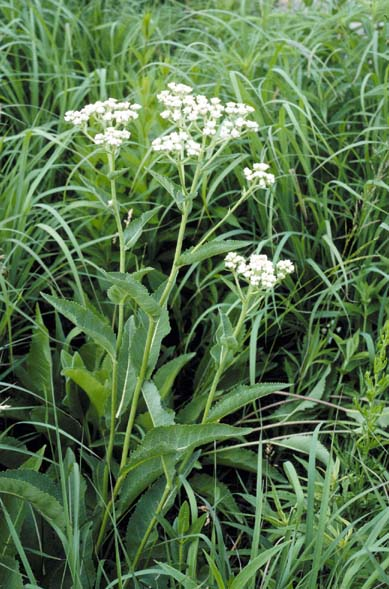
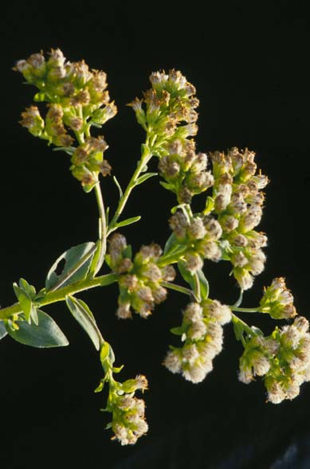

Parthenium integrifolium
Family: Asteraceae
Wild Quinine
Swink/Wilhelm #8


FLOWERING: June-September
SEED TIMING: Mid-September through October
HABITAT: Dry savannas; prairies
DIAGNOSTIC FEATURES: 2-3 feet high. Large, dark green, rough leaves. Dense terminal clusters of shiney white flower heads with abbreviated ray flowers.
TO PICK: Stem and seed heads turn dark grey-brown. Remove entire head.